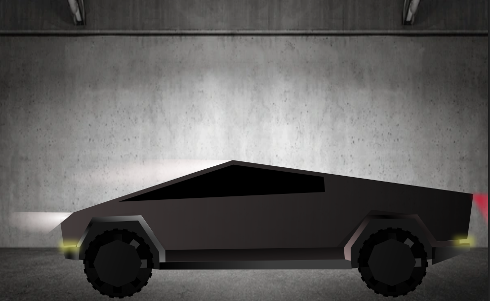

Vježbe i projektni zadaci
Vježba 1: FontForge i izrada vlastitog fonta
Prva vježba bila je posvećena radu u programu FontForge, gdje smo od nule dizajnirali i izradili vlastiti font. Učili smo kako kreirati osnovne oblike slova, prilagoditi linije i krivulje te izvesti gotov font u .ttf formatu za kasniju upotrebu na webu i u drugim projektima.
Vježba 2: Inicijali korištenjem vlastitog fonta
Druga vježba bila je fokusirana na korištenje vlastitog fonta izrađenog u prvoj vježbi. Zadatak je bio dizajnirati inicijale svog imena i prezimena, koristeći isključivo svoj font u nekom grafičkom programu (u ovom slučaju Inkscape). Time smo testirali funkcionalnost i estetiku našeg fonta te naučili kako ga implementirati u digitalne projekte.
Vježba 3: Rad s tekstom i slojevima
Treća vježba bila je usmjerena na dodavanje i stilizaciju teksta na slike te rad sa slojevima za postizanje naprednijih grafičkih efekata.
Vježba 4: Selektiranje i maskiranje
U četvrtoj vježbi učili smo različite tehnike selektiranja dijelova slike i korištenje maski za precizno uređivanje odabranih područja. Učili smo o transformiranju, translaciji i rotaciji. Ovo mi je jedna od zanimljivijih vježbi koje smo odradili u Inkscapeu.
2. PROJEKTNI ZADATAK: Vektor grafika
Zadatak iz vektor grafike u kojem smo koristili sve dosad naučene alate i tehnike.
Ovaj projekt je bio prilika da primijenim sve što sam naučio kroz rad u prethodnim vježbama i stvorim novu vektorsku grafiku.
Vježba 5: Osnove piksel grafike
U petoj vježbi krenuli smo učiti o pixel grafici i osnovnim tehnikama obrade fotografija. Ovo je bio prvi zadatak iz ove cjeline u kojem sam naučio osnovne korekcije na fotografiji, poput podešavanja kontrasta, svjetline i osnovnog retuširanja.
Vježba 6: Promjena boje fotografije
U šestoj vježbi nastavili smo učiti o pixel grafici, s naglaskom na promjenu boje fotografije. U ovom zadatku učilo sam kako koristiti različite alate za selekciju kako bi potpuno promjenio boje, što je važno za kreativnu manipulaciju slikama i prilagodbu vizualnog identiteta.
Vježba 7: Realistično dodavanje elemenata
U sedmoj vježbi nastavili smo učiti o piksel grafici, s fokusom na realistično dodavanje elemenata na postojeću fotografiju. Naučio sam kako izrezivati fotografije, dodavati drop shadow na cropovane elemente i prilagođavati ih postojećoj fotografiji kako bi konačan rezultat bio što prirodniji i uvjerljiviji. U početku sam se malo slabije snalazio, ali vremenom sam krenuo shvaćati kako detalji utječu na percepciju realnosti fotografije.
2. PROJEKTNI ZADATAK: Piksel grafika

Zadatak iz piksel grafike u kojem smo koristili sve dosad naučene alate i tehnike.
Ovaj projekt je bio prilika da primijenim sve što sam naučio kroz rad u prethodnim vježbama i stvorim novu fotografiju.
Vježba 8: Izrada GIF animacije

Sa osmom vježbom ušli smo u svijet fotomontaže.
Zadatak je bio fokusiran na izradu GIF-a od postojećeg videozapisa.
Ovaj zadatak mi je omogućio da se upoznam s osnovama animacije i stvaranja GIF-ova.
Vježba 9: Montaža videa
U devetoj vježbi prvi puta smo spajali više videouradaka.
Zadatak je bio fokusiran na stvaranje kratkog videa od više snimaka.
Ovaj zadatak mi je omogućio da se upoznam s osnovama montaže i uređivanja videa.
Vježba 10 i 11: Osnove web dizajna
U desetoj vježbi naučili smo osnove izrade web stranice, a već u jedanaestoj i kako izgleda upload te vježbe na GitHub platformu.
Radili smo s HTML-om i CSS-om te učili kako organizirati sadržaj i stilizirati elemente za web. Klikom na gumb ispod možete provjeriti kako je to izgledalo.
3. PROJEKTNI ZADATAK: Video + Web stranica
Trenutno se nalazimo na ovom projektnom zadatku.
Ovaj projekt je bio prilika da primijenim sve što sam naučio kroz rad u prethodnim vježbama i stvorim nešto potpuno novo. Video se može provjeriti klikom na link ovdje.